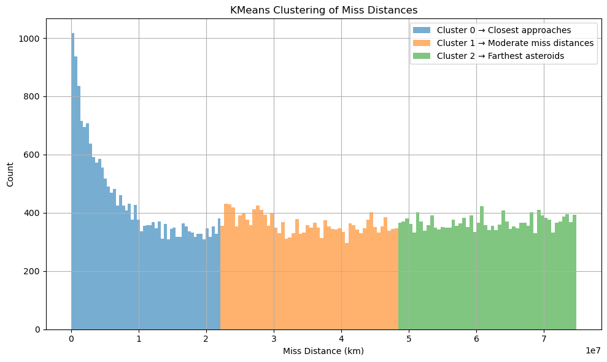

Hazardous NEOs Heatmap - 2025
Where (in Earth-relative coordinates) are NEOs most likely to appear?
Since NASA's NEO API doesn't give actual latitude/longitude approach coordinates, we would simulate random latitudes/longitudes for the NEOs based on their orbital parameters. The map would show the Earth with random lat/lon points representing where NEOs are most likely to appear (approach Earth) in Earth-relative spatial coordinates.
Assumptions for the map:
- You dont have real impact coordinates.
- But you do have orbiting body, velocity, miss distance, and date.
Simulate or project Earth-relative coordinates from miss_distance_km, close approach date (2025), Hazardous=True.
Figure: KMeans clustering on Distance (km)
We used Clusters to group the Asteroids:Cluster 0 → Closest approaches, Cluster 1 → Moderate miss distances, Cluster 2 → Farthest asteroids.
This helps identify which asteroids came closest to Earth and could be useful for risk assessment or prioritizing for further analysis.
Cluster 0 (closest approaches) dominates the dataset, indicating a high number of NEOs with relatively small miss distances from Earth. These objects merit closer tracking and monitoring.

NEO Data Visualization
How do NEOs compare to each other?
This visualization shows the distribution of NEOs based on their size and velocity. The size of the circles represents the size of the NEO, while the color indicates its velocity. This allows for a quick comparison of different NEOs and their potential impact on Earth.